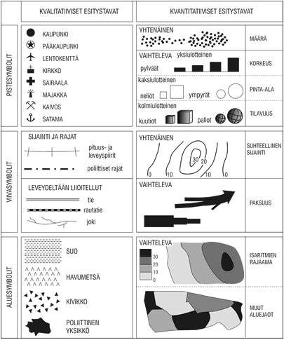

GIS
- Geographic Information Systems
- yleensä myös kuvaa nykyistä spatiaalista tiedettä laajemmin
Paikkatieto
- sijaintitieto
- ominaisuustieto
- data yleensä SQL-tietokannoissa
- paikkatietokanta on spatiaalisen tieteen ydin
- perinteinen kartta on vain yksi tapa visualisoida paikkatietoa
Vektori- ja rasteridata
- kaksi paikkatiedon päätyyppiä
- rasteridata vie paljon enemmän muistia
- vektoridataa on helpompi käyttää
- vektoridata on helppo muuttaa rasteriksi, mutta rasterin muuttaminen
vektoriksi vaatii joko käsityötä tai tekoälyä
Rasteri
- pikseleistä koostuva kuvatiedosto
- skannattu kartta, satelliittikuva, ilmakuva
- formaatit: geotiff, tavalliset kuvaformaatit
Vektori
- yksinkertainen formaatti
- piste, viiva, monikulmio, tai näiden yhdistelmä
- vektoreiden välisten spatiaalisten suhteiden määrittäminen on
helppoa
- formaatit: ESRI shapefile, geojson
Kartografia
Historiaa
- karttojen piirtäminen on vanhin tapa esittää paikkatietoa
- perinteisiä ongelmia: kuinka esittää maapallo kaksiulotteisella
paperilla, mitä informaatiota sisällyttää
- geoidit, projektiot ja koordinaattijärjestelmät
Moderni kartografia
- geoinformatiikan ansiosta kartat voidaan vapauttaa paperin
staattisuudesta
- interaktiiviset ja päivittyvät kartat, myös kartta-animaatiot
- kaukokartoitus mahdollistaa nopeat pikakartoitukset
Datavisualisointi
- kattokäsite, johon myös kartografia kuuluu
- tilastolliset kaaviot ja muut esitykset
- esteettinen näkökulma
Funktio
- mitä varten visualisointi tehdään?
- mitkä kohteet ovat tarpeeksi tärkeitä?
- turha informaatio pois
Abstraktiotaso
- mitkä kohteet ovat tarpeeksi suuria?
- äärimmäisen tärkeä asia visualisoinnissa, etenkin kartoissa
- turha informaatio pois
QGIS
Taustaa
- vapaa ja avoin työpöytäsovellus
- käytössä tutkimuksessa, yrityksissä, kansalaisjärjestöissä,
julkishallinnossa ympäri maailmaa
- avoin lähdekoodi on tärkeää tieteen ja päätöksenteon läpinäkyvyyden
kannalta!
- QField mobiililaitteisiin
Työkalut
- työkaluja on niin paljon, ettei kaikkia voi esittää samaan aikaan
käyttöliittymässä
- paljon työkaluja saatavilla lisäosina
Georeferointi
- paikkatiedon yhdistäminen oikeaan sijaintitietoon
- vanhojen karttojen ja asemakaavojen georeferointi vaatii
oikaisupisteita (Ground Control Point, gcp)
- vaatii pisteitä, jotka sijainti tiedetään muun paikkatiedon, kuten
vertailukartan, avulla
Vektorointi
- rasterimuotoisen datan (vanha kartta tai ilmakuva) muuttaminen
vektorimuotoon
- tapahtuu käytännössä luomalla joukko uusia vektoritasoja, ja
piirtämällä ne kartan päälle
Teemakartat

Teemakarttojen visuaaliset muuttujat ja
tiedon mitta-asteikot
Helsingin yliopisto. Kvalitatiiviset ja kvantitatiiviset esitystavat
Koropleettikartat
Karttojen tulkinta
Kartan luonne
- kaikki kartat ja muut visualisoinnit ovat valetta
- sekä nykyiset että historialliset kartat on tehty palvelemaan
tiettyä tarkoitusta
- lähdekritiikki on äärimmäisen tärkeää
MAUP
- muunnettavien alueyksiköiden ongelma
- aluerajaus vaikuttaa tilastointiin, samoin käytettyjen alueiden
koko!
- USAn vaalipiirien gerrymanderointi
on tästä erityisen härski esimerkki
Syy-yhteydet
- ekologinen harha
- pelkästään kahden teemakartan vertaamisella ei voi todeta
kausaalisia suhteita!
- esimerkki: Pähkinäsaaren rauhan raja ei
vaikuta suomalaisten terveyteen
Lopuksi